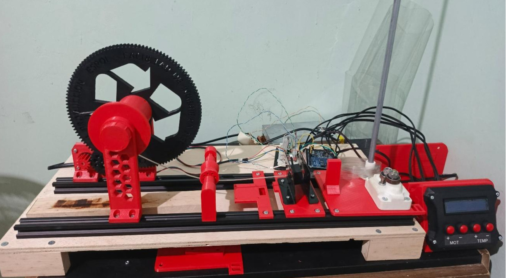
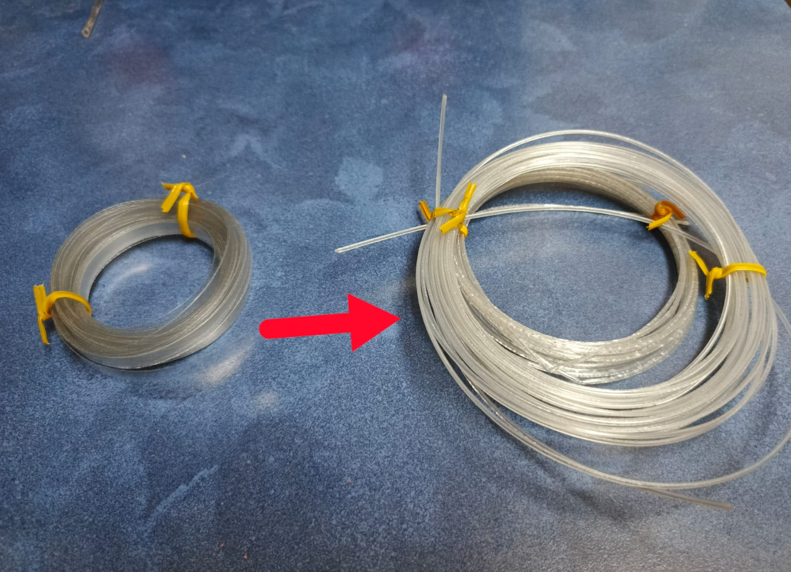
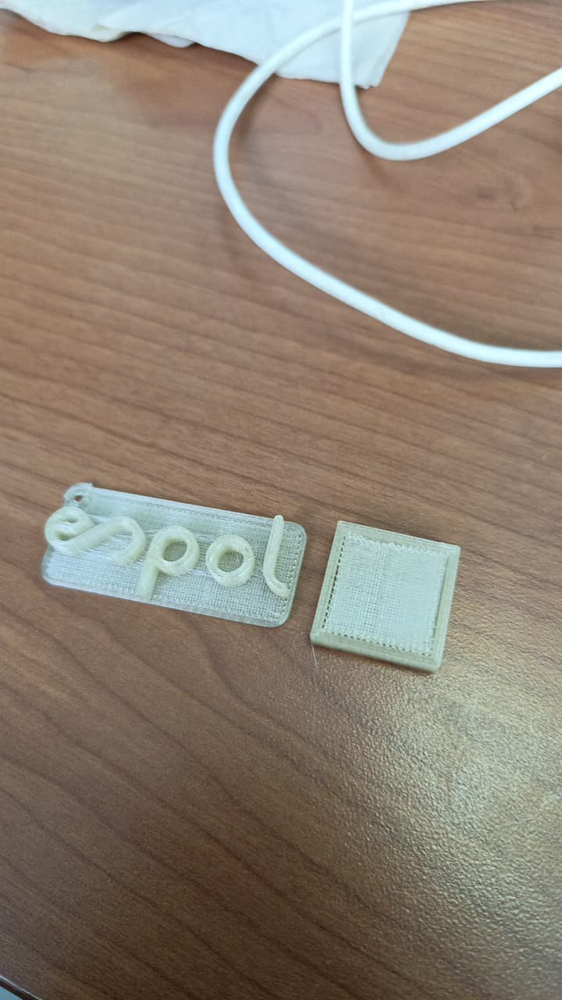

Extrusor de Filamento PET

Este proyecto consistió en la construcción y adaptación de una máquina capaz de reciclar botellas de plástico PET para convertirlas en filamento utilizable para impresión 3D, promoviendo la economía circular y la ingeniería sostenible.
Detalles Técnicos
El núcleo del proyecto se basa en la mecánica del Recreator 3D MK5Kit, adaptado con piezas de una Ender 3. La electrónica ha sido rediseñada totalmente para ofrecer un control preciso.
Componentes y Características:
- Controlador Central: Arduino Uno implementando lógica de control PID para estabilidad térmica.
- Interfaz de Usuario (HMI): Pantalla LCD para visualización de temperatura y estado, acompañada de botones físicos para la configuración de parámetros y navegación de menús.
- Hotend: Boquilla y bloque calefactor de Ender 3 V3 SE para mayor eficiencia de fusión.
- Etapa de Potencia: Circuito MOSFET/Transistor diseñado a medida para manejar la resistencia calefactora.
Video de Funcionamiento
Demostración del sistema en operación.
Galería de Resultados
Comparativa del material crudo vs. procesado y prueba de impresión final.

Comparativa: Tira de plástico cruda vs. Filamento extruido.

Prueba de impresión utilizando el filamento reciclado.